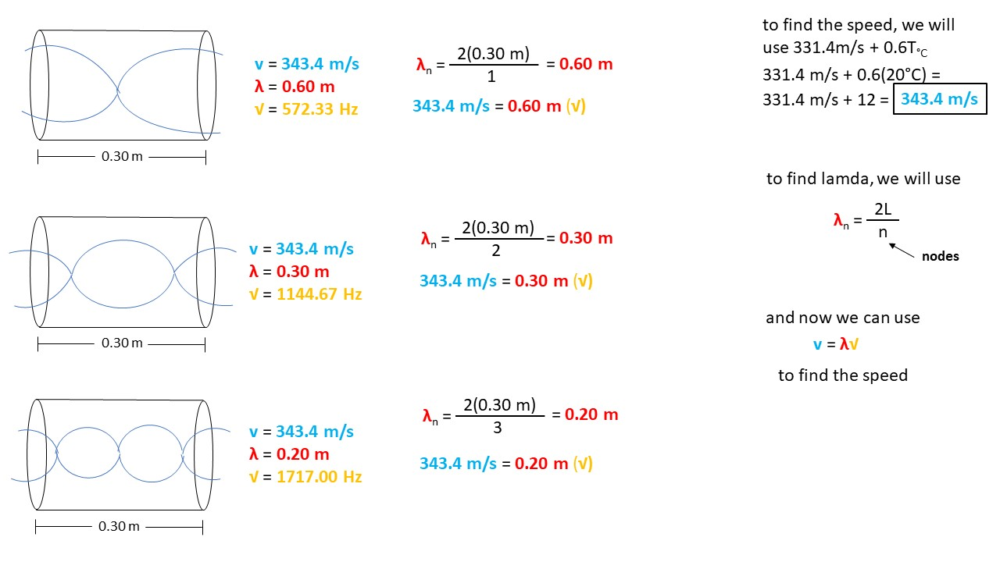

Academic Subjects
➤
Physics
➤
Physics I
➤
Standing Wave Wavelength, Frequency & Speed Of First Three Harmonics In Open Tube
A 0.30 meter long open ended tube is exposed to a range of different frequencies at an air temperature of 20℃.
Draw the standing waves for the first three harmonics and give the wavelength, frequency and speed of each wave
